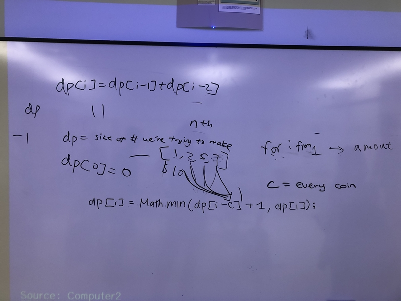
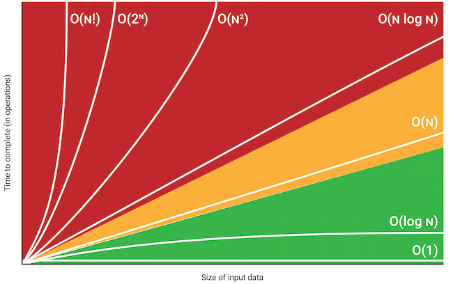

Coin Change
With our solution found here, we investagated the leetcode problem "coin change" which involves finding the a certain value out of a variaty of coins. We discussed dynamic programming and how it could be used to solve this problem
Big O notation
We discussed big O notation, and how it used for a metric for space and time complexity. It describes roughly how much more demanding a program will be as the problem it sovles increases for the worst case senario. Big O notion is a very strong tool we have for communicating the efficiency of our code on a broad scale.
NumPy

With its documentation found here, NumPy was the topic of this lecture. NumPy is a python library that allows you to simplify and speed up many different python programs. One of its main uses that we disscussed are NumPy arrays, which allow you to have arrays in multiple demensions with vectorized functions. Overall, using numpy can improve speed of your code, its readability, and allow you to think of problems with mroe abstraction.